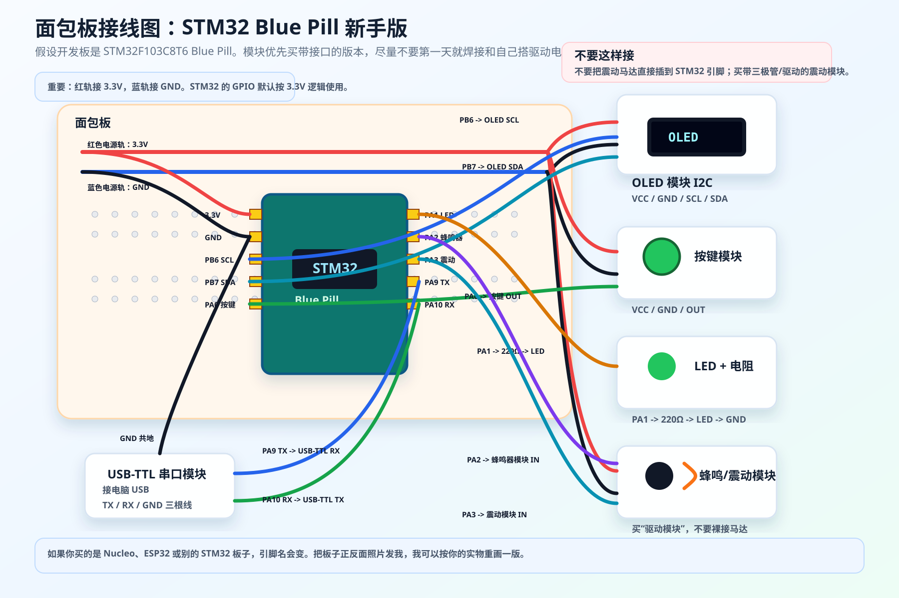

推荐最终题目
适合开题报告AI Reality Bridge：基于 C++、STM32 与千问视觉 API 的现实感知问答原型
一句话描述：AI 通过摄像头看见现实，通过麦克风听见用户问题，通过 C++安全桥接层调用千问多模态模型， 最后用投影、语音和 STM32 反馈把答案返回给用户。
采购清单 / 视觉识别 / 语音输入 / 投影展示
目标不是第一步就做成眼镜外壳，而是先实现智能眼镜最核心的能力： 摄像头实时读取画面，麦克风接收语音问题，千问视觉/Omni API 理解图像和语音， 第一阶段先由 Windows 电脑端 C++负责桥接、联网与安全校验，NUCLEO负责按键、LED、蜂鸣器、震动和显示/投影反馈。 Raspberry Pi 作为第二阶段升级路线，用于脱离电脑运行。
AI Reality Bridge：基于 C++、STM32 与千问视觉 API 的现实感知问答原型
一句话描述：AI 通过摄像头看见现实，通过麦克风听见用户问题，通过 C++安全桥接层调用千问多模态模型， 最后用投影、语音和 STM32 反馈把答案返回给用户。
原则：不追最低价，优先选择文档完整、接口标准、后续还能复用的模块。
每类都给两个选项；带 推荐 的是我更建议你先买的型号。
外币价格按 2026-06-02 附近汇率粗略换算：1 USD ≈ 6.8 RMB，1 JPY ≈ 0.042 RMB。
| 类别 | 选项 A | 选项 B | 建议 |
|---|---|---|---|
| 第二阶段独立运行主控板 | 后买：Raspberry Pi 5 8GB 约 RMB 540-650 |
Raspberry Pi 4 Model B 4GB 约 RMB 390-520 |
第一阶段先不买；等 Windows 原型稳定后，再买它做脱离电脑版本。 |
| 第二阶段主控电源 | 后买：Raspberry Pi 27W USB-C Power Supply 约 RMB 90-120 |
5V/5A USB-C PD 电源，正规品牌 约 RMB 60-120 |
跟 Raspberry Pi 同步后买；Pi 5 不要用普通手机线凑合。 |
| 第二阶段主控存储 | 后买：SanDisk High Endurance microSD 64GB 约 RMB 45-80 |
Samsung EVO Plus microSD 64GB/128GB 约 RMB 40-100 |
跟 Raspberry Pi 同步后买；第一阶段日志先存在 Windows 电脑上。 |
| 第二阶段散热与外壳 | 后买：Raspberry Pi 5 Active Cooler + 外壳 约 RMB 70-150 |
铝合金主动散热外壳 约 RMB 80-180 |
跟 Raspberry Pi 同步后买；第一阶段不需要。 |
| STM32 NUCLEO 开发板 | 推荐：NUCLEO-F446RE 约 RMB 128 |
NUCLEO-F401RE 约 RMB 128 |
NUCLEO 不负责联网；它负责稳定控制 OLED、LED、蜂鸣器、按键和震动。 |
| 电脑 / Pi 与 NUCLEO 连接线 | 推荐：USB-A 转 Mini-B 数据线 约 RMB 15-35 |
USB-A 转 Mini-B 带屏蔽数据线 约 RMB 25-50 |
第一阶段用于 Windows 电脑连接 NUCLEO；第二阶段可继续用于 Pi 连接 NUCLEO。 |
| 模块接线扩展板 | 推荐：DFRobot Gravity IO Expansion Shield V7.1 约 RMB 33 |
Seeed Grove Base Shield V2.0 约 RMB 24 |
NUCLEO 有 Arduino R3 接口，配 Shield 能少插很多散线。 |
| OLED 状态屏 | 推荐：Adafruit 1.3" 128x64 OLED STEMMA QT 约 RMB 136 |
已有 套件 OLED 显示屏 RMB 0，先用现有模块 |
先用已有 OLED；只有显示尺寸、接口或库不兼容时再买 Adafruit/Waveshare。 |
| 按键输入 | 推荐：DFRobot Gravity Digital Push Button DFR0029-Y 约 RMB 12 |
已有 套件按键 RMB 0，先用现有模块 |
先用已有按键；如果不好固定或没有模块板，再买 Gravity/Grove 按键。 |
| 状态灯 | 推荐升级：DFRobot Gravity Digital RGB LED Module DFR0605 约 RMB 13 |
已有 套件 LED RMB 0，先用现有 LED |
先用已有 LED 做红/绿/蓝状态；想省接线再升级 RGB LED 模块。 |
| 蜂鸣/提示音 | 推荐：DFRobot Gravity Digital Buzzer DFR0032 约 RMB 13 |
已有 套件蜂鸣器 RMB 0，先用现有模块 |
先用已有蜂鸣器做风险提醒；真正语音输出交给电脑音箱。 |
| 震动反馈 | 推荐：DFRobot Gravity Vibration Motor Module DFR0440 约 RMB 17 |
Seeed Grove Vibration Motor 105020003 约 RMB 13 |
必须买带驱动/接口模块的版本，不要把裸马达直接接 NUCLEO。 |
| 触觉高级升级 | 推荐升级：Adafruit DRV2605L Haptic Controller 约 RMB 54 |
Seeed Grove Haptic Motor 105020011 约 RMB 33 |
第一版可不买；以后做更像智能眼镜的触觉反馈再加。 |
| 摄像头 | 已有可用：Logitech C270 RMB 0，已拥有 |
Logitech Brio 100 约 RMB 272 |
C270 先用；如果拍题文字不清楚，再升级 1080p 摄像头。 |
| USB 麦克风 | 先用：Logitech C270 内置麦克风 RMB 0，已拥有 |
FIFINE K669B USB Microphone 约 RMB 170-240 |
第一版先用 C270 麦克风；语音识别不稳再买独立 USB 麦克风。 |
| 电脑音箱 | 推荐：Creative Pebble 2.0 约 RMB 136-170 |
Creative Pebble V3 约 RMB 238-272 |
AI 语音回答由电脑播放，别让 STM32 负责复杂语音。 |
| 面包板/杜邦线 | 已有 套件面包板 RMB 0，先用现有面包板 |
已有 套件杜邦线/面包板跳线 RMB 0，先用现有线材 |
先不重复买；NUCLEO 体积较大，若线不够长再补一套母对母杜邦线。 |
| 投影显示 | 推荐：KODAK LUMA 150 约 RMB 1,630 |
Anker Nebula Capsule 3 约 RMB 2,350 |
答辩效果优先选投影；预算紧张可先用电脑屏幕模拟。 |
| 透明 HUD 板 | 推荐：NuDell Acrylic Sign Holder 8.5"x11" 约 RMB 57 起 |
Azar 104436 Acrylic Sign Holder 按店铺实时价 |
买桌面立牌/菜单牌即可，不需要定制光学镜片。 |
| 支架/固定 | 推荐：Ulanzi MT-44 Tripod 2502B 约 RMB 176 |
普通桌面三脚架 + 手机夹/摄像头夹 约 RMB 70-140 |
支架很重要，画面稳定比摄像头升级更先影响识别效果。 |


CAPTURE、PROJECTOR:TEXT、LED:RED。scene.jpg。根据课程 PDF，项目需要体现面向对象、UI、随机文件读写更新、至少 5 个类、继承层级不少于 2、源码不少于 2000 行。 因此不要只提交 STM32 固件。更稳妥的做法是：提交一个 PC端 C++ 桥接程序作为主项目， STM32 固件作为硬件反馈模块，网页作为展示层。
| 课程要求 | 本项目对应实现 |
|---|---|
| Class / Object / Encapsulation | CameraService、SpeechService、QwenVisionClient、SerialDevice、AuditLogStore 等类封装各模块。 |
| Inheritance / Polymorphism | Device -> InputDevice -> CameraInput，以及 OutputDevice -> ProjectorOutput/NucleoFeedback。 |
| 不少于 5 个类 | 计划设计 12 个以上 C++类，覆盖设备、AI 客户端、任务、日志、UI、配置、测试等。 |
| 继承层级不少于 2 | 设备抽象层至少三层：Device、InputDevice/OutputDevice、具体设备类。 |
| UI needed | PC端 C++可做控制台菜单或 Qt/网页本地 UI；当前 HTML 页面可作为展示 UI。 |
| Random file processing | 用二进制或 JSON 审计日志文件支持写入、读取、按记录 ID 更新，例如修改风险确认状态。 |
| 源码不少于 2000 行 | PC端 C++主程序 + STM32固件 + 测试/示例数据，足够达到行数要求，但应避免无意义灌水。 |

这张图是早期 Blue Pill 版的接线参考，用来解释面包板、电源轨和模块接线关系。 你已经决定使用 NUCLEO 后，最终接线应按 NUCLEO-F446RE 的 Arduino R3 / ST Morpho 引脚重新画。 采购到手后，把开发板和扩展板照片发给我，我会给你重画“每根线插哪里”的 NUCLEO 专用图。
| 旧 Blue Pill 引脚 | 接到哪里 | NUCLEO 中的对应思路 |
|---|---|---|
3.3V |
面包板红色电源轨、OLED VCC、按键模块 VCC |
给 3.3V 模块供电 |
GND |
面包板蓝色地线轨、所有模块 GND |
共地，所有模块必须连在一起 |
PB6 |
OLED SCL |
I2C 时钟线 |
PB7 |
OLED SDA |
I2C 数据线 |
PA0 |
按键模块 OUT |
触发拍照、提问或确认 |
PA1 |
220Ω 电阻 -> LED 长脚；LED 短脚 -> GND |
状态灯 |
PA2 |
有源蜂鸣器模块 IN |
风险提示音 |
PA3 |
震动马达驱动模块 IN |
震动提醒 |
PA9 |
USB-TTL 模块 RX |
STM32 发消息给电脑 |
PA10 |
USB-TTL 模块 TX |
电脑发命令给 STM32 |
SCL、SDA、3.3V、GND。如果要做出“智能眼镜”的感觉，建议调用有视觉能力的千问模型处理图片， 或使用支持音频/图像输入的多模态实时接口做语音问答。STM32 不跑大模型， PC端 C++负责把图片和语音问题发给 API，再解析返回结果。
同时保留离线演示模式：提前准备几张图片和模拟 JSON，防止答辩现场网络或 API 出问题。
本项目没有把 AI 简单封装在网页里，而是构建了一个现实世界接口： 摄像头负责看见现实，麦克风负责接收问题，千问多模态模型负责理解和回答， C++负责可靠桥接、安全校验和串口通信，STM32负责把 AI 结果转化为人能感知的光、声、屏幕和震动反馈。